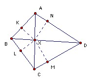

ABCD is a convex quadrilateral and X is the point where its diagonals meet. XA sin A + XC sin C = XB sin B + XD sin D. Show that ABCD must be cyclic.
Solution

Take perpendiculars from X to AB, BC, CD, DA with feet K, L, M, N respectively. Then the midpoint of AX is the center of the circle through A,K,X,N. Also KN subtends an angle 2∠A at the center, so KN = 2 x radius x sin(2A/2) = XA sin A. Thus the condition in the question gives KN + LM = MN + KL (**). But we also have KN = XK cos XKN + XN cos XNK = XK cos XAN + XN cos XAK (*)
Let us write ∠XAD = α1, ∠XAB = α2, ∠XBA = β1, ∠XBC = β2, ∠XCB = γ1, ∠XCD = γ2, ∠XDC = δ1, ∠XDA = δ2. Then (*) becomes KN = XK cos α1 + XN cos α2. Similarly, KL = XL cos β1 + XK cos β2, LM = XM cos γ1 + XL cos γ2, MN = XN cos δ1 + XM cos δ2. So (**) becomes, XK(cos α1 - cos β2) + XL(cos γ2 - cos β1) + XM(cos γ1 - cos δ2) + XN(cos α2 - cos δ1) = 0 (***).
There is no loss of generality in assuming that α1 ≤ β2. That is equivalent to A lying outside the circumcircle of BCD and hence to α2 ≤ δ1. But α1 + δ2 = β2 + γ1, so γ1 ≤ δ2. Similarly, α2 + β1 = γ2 + δ1, so γ2 ≤ β1. The cosine function is decreasing over the range 0o to 180o, so it follows that all the parentheses in (***) are non-negative. Hence they must all be zero, and all the pairs of angles equal. It follows that ABCD is cyclic.

© John Scholes
jscholes@kalva.demon.co.uk
2 Dec 2003
Last corrected/updated 2 Dec 2003